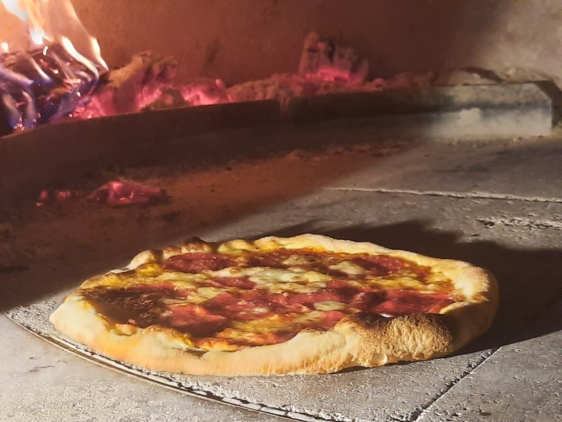
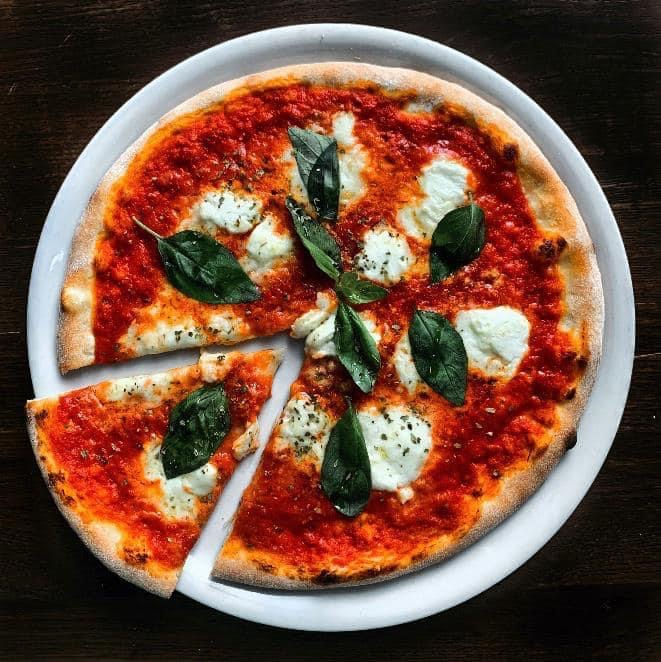

Pizza uit de houtoven, midden in Woerden
Het Italiaanse familierestaurant van Nino en Helene, aan de Hogewoerd. Kijk mee in onze open keuken hoe uw pizza op ambachtelijke wijze wordt bereid en afgebakken.


Een écht familierestaurant
Avanti Houtoven Pizzeria is geheel eigendom van eigenaren en koppel Nino en Helene. Nino komt uit Italië en verwezenlijkt hier zijn droom: de Italiaanse keuken op zijn ambachtelijke manier naar Nederland brengen.
Service en kwaliteit vindt u bij ons altijd. Maar wanneer u eenmaal binnen bent, doen wij er alles aan om u met sfeer en enthousiasme een 'welkom thuis'-gevoel te geven.
Siete benvenuti nel nostro ristorante!
Nino & Helene

De houtoven is onze grote trots
Onder zeer hoge temperatuur bakken wij de gerechten af. Daardoor is de bereidingstijd erg kort, gaan de smaken niet verloren en geniet u van heerlijk Italiaans eten.
- Open keuken: kijk mee hoe uw pizza wordt bereid
- Ingrediënten rechtstreeks geïmporteerd uit Italië
- Naast pizza's ook verse pasta, antipasti, vis en vlees
- Voor de bambini: de Pizza Nutella, een echte mega-hit
Liever thuis genieten?
Hey pizza liefhebber! Bij ons kun je niet alleen ter plaatse eten, maar ook een pizza afhalen. Alle pizza's van onze kaart staan op het afhaalmenu, voor dezelfde prijs.
Let wel: we zijn in de eerste plaats een restaurant. Is de keuken te druk met gasten, dan vertellen we je dat meteen als je belt. Probeer het dan gewoon een volgende keer weer.
Bekijk de pizza'sReserveer een tafel
Reserveren kan via het formulier of per mail naar reserveren@avantihoutovenpizza.nl. U ontvangt altijd een antwoord, ook als er geen plaats is.
Vandaag nog komen eten? Reserveringen voor dezelfde dag die op of na 17:00 binnenkomen worden niet verwerkt. Bel dan even: 0348-201095.
- Een reservering is pas definitief als wij die hebben bevestigd.
- Reservering voor vandaag gedaan en om 17:00 nog geen bevestiging? Graag even bellen.
- Met meer dan 8 personen komen eten? Bel ons voor uw aanvraag.
- Op de eerstvolgende werkdag nog geen antwoord? Kijk even in uw spambox, en bel ons anders.
- Zakelijk diner, borrel of receptie: mail ons het verwachte aantal personen en de gewenste datum.
In het hart van Woerden
Woerden is de hoofdstad van het Groene Hart: een gezellige vestingstad met musea, een kasteel, een molen en kerken. Ons restaurant kunt u niet missen: pal naast het welbekende stadshotel en recht tegenover de parkeergarage. Heeft u Woerden kunnen bezichtigen? Kom dan nog even genieten bij ons!
Openingstijden
Dinsdag t/m zondag
17:00 - 22:00
Maandag gesloten
Adres
Hogewoerd 2
3441 BE Woerden
Bekijk op Google Maps